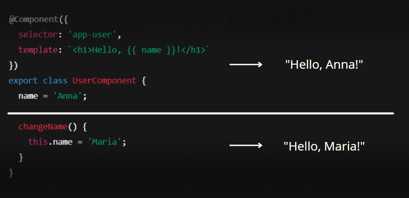
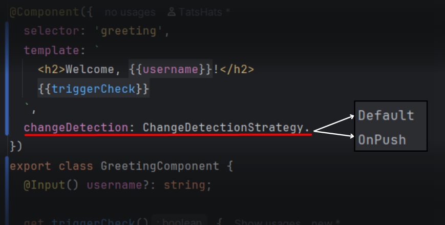

In Angular, the Change Detection Strategy is the way the framework decides if it needs to update the user interface when data changes.
When we change variables in a component, Angular needs to know if it should update the HTML. For example, if the user's name changes:


Default strategy:
In large apps, checking everything can slow down performance.
OnPush: Checks components only when needed.
Angular only checks the component when @Input changes or an event occurs.
OnPush requires immutable data to perform fast reference checks.
Changing the reference triggers the update in the component.
Events can trigger change detection even with OnPush strategy.
Async operations do not trigger change detection unless an event occurs.
Use ChangeDetectorRef to manually trigger change detection.
OnPush requires you to create new objects to trigger change detection.
OnPush improves performance by reducing unnecessary checks.
| Feature | Default | OnPush |
|---|---|---|
| When Angular checks | After any change | Only after @Input or events |
| Automatic updates | Yes | No |
| Performance | Less efficient | More efficient |